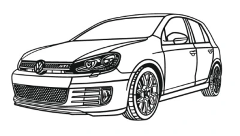

Výběr prvního auta může být pro začátečníka složitý. Existuje mnoho modelů, motorů a možností, které mohou rozhodování ztížit. Tento web vám pomůže zorientovat se a vybrat auto, které bude spolehlivé, cenově dostupné a vhodné pro začáteční jízdu.
Ne všechna auta jsou pro začátečníky vhodná – proto je důležité vybírat s rozvahou.
Najdeš zde přehled oblíbených modelů, jejich motorizace a také rady, na co si dát při výběru pozor, aby ses vyhnul zbytečným problémům a vysokým nákladům.
Cílem tohoto webu je usnadnit výběr prvního auta a pomoci ti udělat správné rozhodnutí.
Při výběru prvního auta je důležité věnovat pozornost několika klíčovým věcem. Nejde jen o cenu, ale hlavně o technický stav a historii vozu.
Nejenže je důležité vybrat správné auto, ale také se o něj dobře starat. Pravidelný servis, kontrola hladiny oleje a pneumatik, a opatrná jízda mohou prodloužit životnost vašeho vozu a ušetřit vám peníze na opravách. Auto je také třeba pojišťovat a pravidelně kontrolovat technický stav, aby byl bezpečný pro vás i ostatní účastníky silničního provozu.
Nezapomeňte, že jako majitel auta musíte mít platné pojištění. Porovnávejte nabídky různých pojišťoven a zvažte, jaké krytí potřebujete. Nejenže je to zákonná povinnost, ale také vám to může ušetřit spoustu peněz v případě nehody. Proto je pojištění první věcí, kterou řešit.
Pro začínajícího řidiče bude pojištění sice dražší, ale postupem času se bude zlevňovat, takže se nemusíte hned zaleknout při první platbě.
Každé auto musí pravidelně procházet technickou kontrolou (STK). Ujistěte se, že vaše auto je v dobrém stavu a splňuje všechny požadavky pro úspěšné absolvování STK. Na STK budete jezdit každé 2 roky.
Nejčastějšími důvody neprojití STK jsou koroze, špatné brzdy, nefunkční světla a problémy s emisemi. Pravidelná údržba a kontrola těchto aspektů mohou pomoci zajistit, že vaše auto projde STK bez problémů.
Aby auto prošlo technickou kontrolou, je důležité pravidelně kontrolovat jeho stav a včas řešit případné problémy.
Pravidelná kontrola technického stavu auta je klíčová pro bezpečnost a spolehlivost. Kontrolujte hladinu oleje, stav pneumatik, brzd a světel. Pravidelný servis a údržba mohou předejít vážným poruchám a prodloužit životnost vašeho vozu.
{kind=link}
{kind=link}
{kind=link}
{kind=link}
{kind=link}